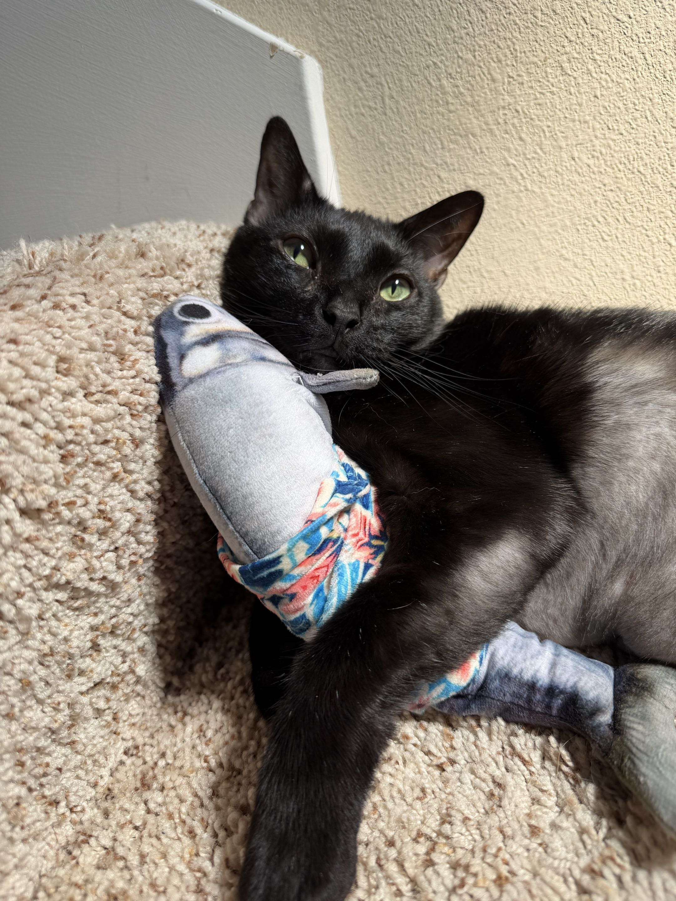
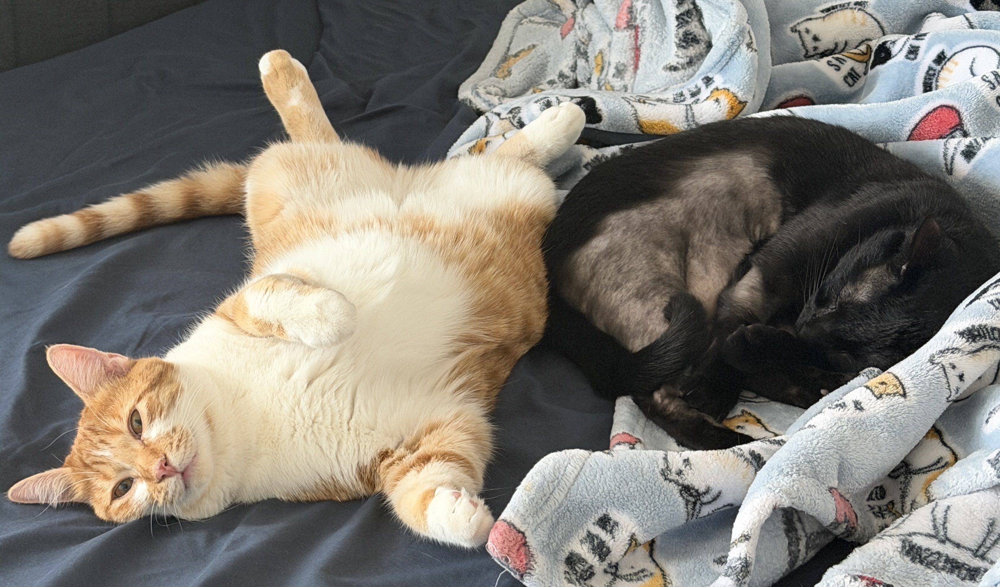

Activities
Outside of school, I like to:
-
Compete in video games: I've hit the top rank in VALORANT, Apex Legends, and Marvel Rivals. For VALORANT, I played in collegiate games for Texas A&M University! Playing at a high competitive level was not only fun, but it also strengthened my communication, teamwork, and ability to make quick decisions while under pressure.
-
Compete in programming: I enjoy competitive programming because it pushes me to solve unfamiliar problems while under time-constraints, which has helped me be more persistent, think through problems efficiently, and has helped me with trying different approaches to the same problem. Right now, I'm furthering these skills and having fun with the Aggie Competitive Programming Club.
-
Experiment in Personal Projects: On my own time, I try to explore new technologies and implement them in my own way. My current projects mostly revolve around machine learning. This has turned into a good way to teach myself how to work through unknown codebases and tools!
-
Cook: One of my favorite pastimes outside of school is experimenting in the kitchen, trying out new recipes and making something delicious! Cooking has also been a fun way for me to experiment with new things while staying organized along the way.
-
Take care of my two cats: The most important thing to me in the world just happens to be my two cats. One orange and one black. Just like Halloween!
My two cats:

